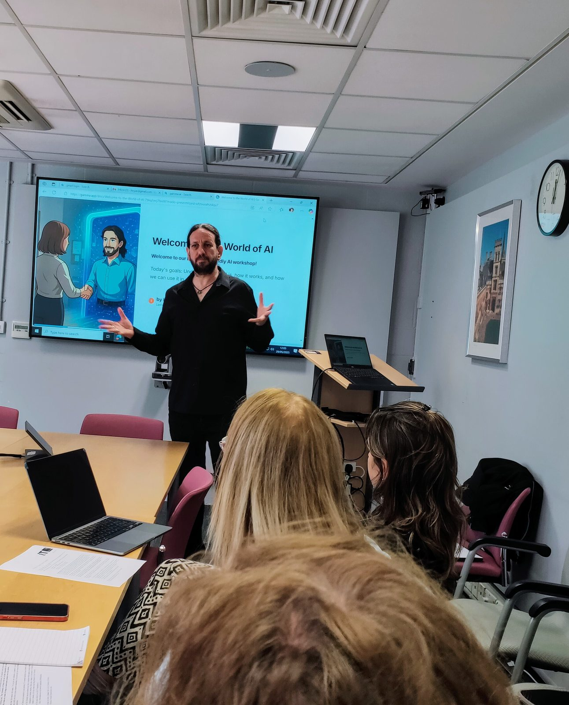
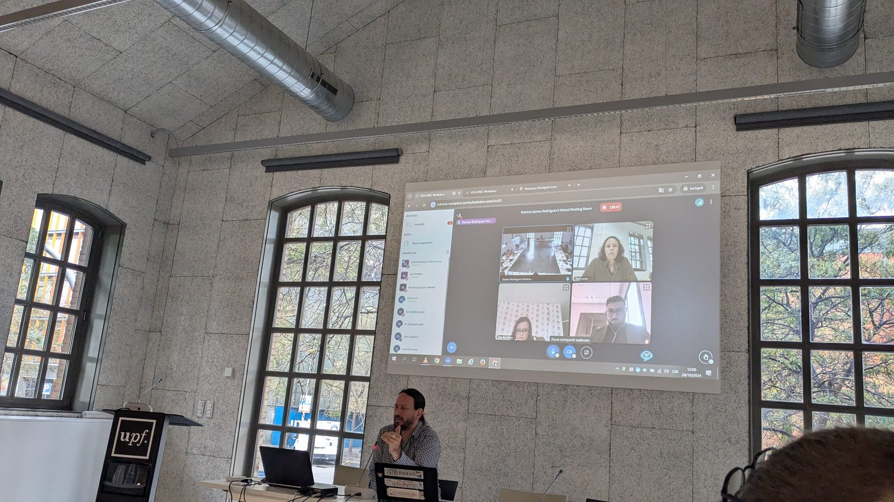
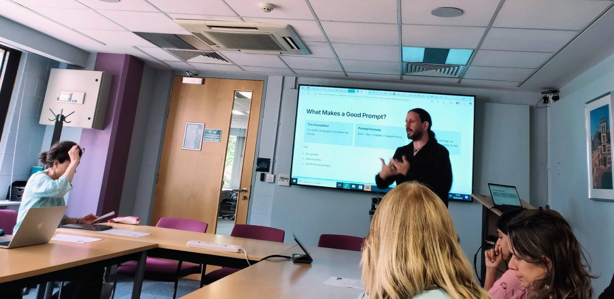

Real-World AI Education
Examples of AI training and consultancy delivered for schools, colleges, organisations, and communities.

Teacher Training Workshop — Kaye College
A custom 9-workshop series for Kaye College lecturers, from AI basics and digital content creation to NotebookLM, AI chatbots for teaching, and Google Studio integration.

VOLCANIC Project — EU Erasmus+
Cross-European collaboration on inclusive AI strategies for disadvantaged populations.

Community AI Literacy Programme
Making AI approachable for older adults who felt left behind by rapidly advancing technology.

Anne's Family Diary Project
Helping a family preserve and digitise their ancestor's diary from generations past using AI tools.
Daybreak — Senior Staff AI Training
Ongoing volunteer training for senior staff, helping them save time and energy by streamlining admin and office tasks with AI.

OUNC — AI for Everyday Life
Workshops on using AI to streamline daily life, including job search and CV writing.

Oxford OJC — Public AI Workshops
Public workshops on AI best practices and the use of AI in teaching.